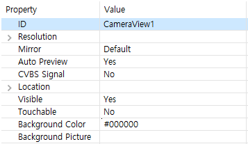

カメラ
FlywizOSは、カメラコントロール機能を提供します。
[!Note] すべてのバージョンのボードからカメラ機能をサポートしていません。もしこの機能が必要な場合は、USBカメラ機能をサポートしているボードを購入する必要があります。
使い方
- まず、カメラコントロールを作成します。デフォルトの背景は黒です。
カメラコントロールのプロパティ]ウィンドウを確認します。

Auto Preview属性をOnに設定します。 接続されているカメラのタイプに応じて、CVBS Signal属性を選択します。
カメラウルボードに接続し、プログラムをダウンロードすると、カメラから入力される映像を見ることができます。
プレビュー開始/停止
ソースコードを使用してプレビューの開始/停止を制御することができます。
- プレビュー開始
mCameraView1Ptr->startPreview(); - プレビュー停止
mCameraView1Ptr->stopPreview();
プレビュー画面キャプチャ
カメラコールバックインターフェイスの実装
class PictureCallback : public ZKCamera::IPictureCallback { public: virtual void onPictureTakenStarted() { mTextView1Ptr->setText("Start taking a photo"); } virtual void onPictureTakenEnd() { mTextView1Ptr->setText("End of photo"); } virtual void onPictureTakenError() { mTextView1Ptr->setText("Photo error"); } virtual const char* onPictureSavePath() { //Photo save path return "/mnt/extsd/camera.jpg"; } };カメラコールバックインターフェース宣言
//Defined as a global static variable static PictureCallback picture_callback;カメラコントロールのインターフェースの登録と登録解除
static void onUI_init(){ mCameraView1Ptr->setPictureCallback(&picture_callback); }static void onUI_quit() { //Remember to empty the registration interface when the interface exits mCameraView1Ptr->setPictureCallback(NULL); }- ボタンを追加して、ボタンが押される時の画面キャプチャ
static bool onButtonClick_Button3(ZKButton *pButton) { //Request a photo mCameraView1Ptr->takePicture(); return false; }
サンプルコード
この例では、カメラのプレビュー、キャプチャ機能などが実装されています。
Sample codeのCameraDemoプロジェクト参照してください。